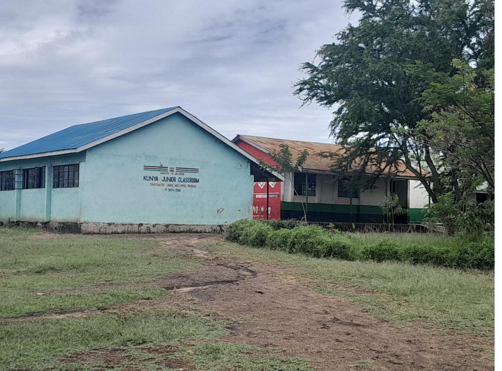

Rooted in community.
Named for a hero.
Kunya Primary School was the first to be built — a foundation laid by the Kochar Community Based Organisation for the children of Uyoma. When those students began to excel and qualify for secondary education, the nearest options were simply too far away.
So the community built again. The secondary school was named after Ramogi Achieng Oneko — Kenyan freedom fighter and son of this very community — a name that carries the weight of struggle, dignity, and the belief that education is liberation.
"The boarding facility means no longer have to choose between household duties and their studies. They can work at night, focus, and imagine a future."
— Prof. Olola Oneko, School Board Member
Both schools are public. All teachers are employed and paid by the Kenyan government. The community's role is to build the infrastructure that makes learning possible.